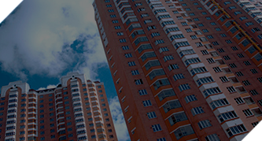
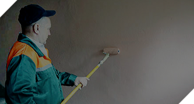
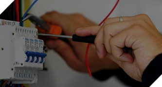
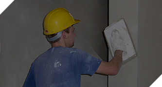
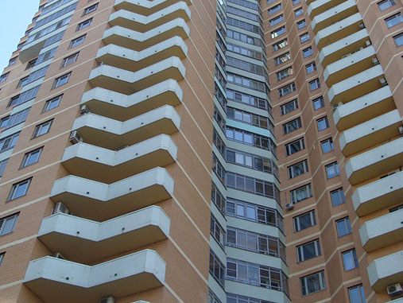
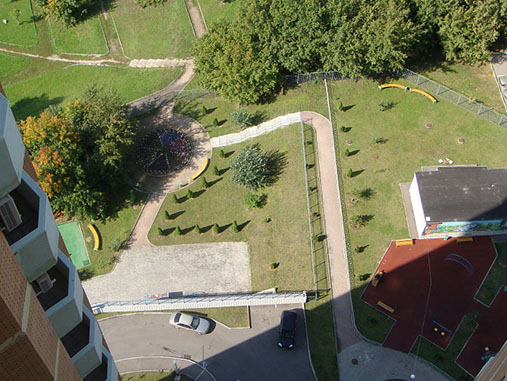
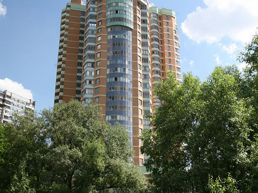
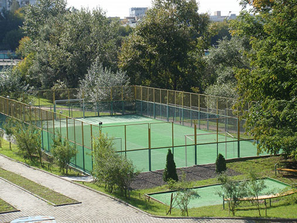

Высокий уровень комфорта с управляющей компанией «Прометей»
Оставьте Ваш телефон и консультант расскажет об услугах компании более подробно
Что Вы получите
- Чистый дом и ухоженный подъезд
- Безопасность и комфорт
- Работающее оборудование и лампочки
- Бесплатное круглосуточное исполнение заявок
- Доступное управление компанией
- Постоянное улучшение условий проживания

- Высокий уровень обслуживания
- Оплата услуг ЖКХ, УК, вызов мастера через интернет
Комфорт как естесственное
состояние дел
Выгодные условия
Узнайте, насколько выгоднее сотрудничать с «Прометей» или получите консультацию по процедуре смены управляющей компании.
Наши услуги
-  Управление и эксплуатация жилого фонда
-  Содержание общедомовых помещений и придомовой территории
-  Содержание и ремонт инженерного оборудования
- Охрана территории
- Диспетчерское обслуживание
- Инвентаризация помещений многоквартирных домов
- Учет потребления коммунальных ресурсов
- Построение системы коммунального снабжения
- Учет проживающих граждан (по месту пребывания), выдача справок
-  Проведение капитального ремонта
- Содействие гражданам в проведении общих собраний собственников
Выполненные работы

- 
- 
- 
ЖК "Раменки-20".
263 квартиры, 278 машиномест, 6 офисов. Управляем с 2008г. Помимо стандартных функций обеспечили круглосуточное аварийно-диспетчерское обслуживание (своя диспетчерская, своя аварийная бригада прямо в доме). Наладили круглосуточную охрану территории.С 2015 года провели комплексные мероприятия по...
модернизации системы видеонаблюдения (устранили "слепые зоны", увеличили количество камер), модернизировали систему доступа - автоматизировали въезд в подземный паркинг (исключили человеческий фактор). В доме стал функционировать не номинальный, а реальный пропускной режим, количество посторонних лиц на территории сократилось значительно. Провели мероприятия по энергосбережению - установили в каждом подъезде, в каждом холле светодиодные лампы с датчиками движения - теперь жители стали значительно меньше платить за общедомовую электроэнергию. Проводим благоустройство придомовой территории - создаем дизайнерские клумбы, сажаем новые кустарники, цветы.
ПОДРОБНЕЕ
ЖК "Раменки-20".
263 квартиры, 278 машиномест, 6 офисов. Управляем с 2008г. Помимо стандартных функций обеспечили круглосуточное аварийно-диспетчерское обслуживание (своя диспетчерская, своя аварийная бригада прямо в доме). Наладили круглосуточную охрану территории.С 2015 года провели комплексные мероприятия по...
модернизации системы видеонаблюдения (устранили "слепые зоны", увеличили количество камер), модернизировали систему доступа - автоматизировали въезд в подземный паркинг (исключили человеческий фактор). В доме стал функционировать не номинальный, а реальный пропускной режим, количество посторонних лиц на территории сократилось значительно. Провели мероприятия по энергосбережению - установили в каждом подъезде, в каждом холле светодиодные лампы с датчиками движения - теперь жители стали значительно меньше платить за общедомовую электроэнергию. Проводим благоустройство придомовой территории - создаем дизайнерские клумбы, сажаем новые кустарники, цветы.
ПОДРОБНЕЕ
ЖК "Раменки-20".
263 квартиры, 278 машиномест, 6 офисов. Управляем с 2008г. Помимо стандартных функций обеспечили круглосуточное аварийно-диспетчерское обслуживание (своя диспетчерская, своя аварийная бригада прямо в доме). Наладили круглосуточную охрану территории.С 2015 года провели комплексные мероприятия по...
модернизации системы видеонаблюдения (устранили "слепые зоны", увеличили количество камер), модернизировали систему доступа - автоматизировали въезд в подземный паркинг (исключили человеческий фактор). В доме стал функционировать не номинальный, а реальный пропускной режим, количество посторонних лиц на территории сократилось значительно. Провели мероприятия по энергосбережению - установили в каждом подъезде, в каждом холле светодиодные лампы с датчиками движения - теперь жители стали значительно меньше платить за общедомовую электроэнергию. Проводим благоустройство придомовой территории - создаем дизайнерские клумбы, сажаем новые кустарники, цветы.
ПОДРОБНЕЕ
Отзывы наших жильцов

Ирина Иванова, Раменское
С УК “Прометей” все меняется только к лучшему. Хорошая детская площадка для маленьких. Огороженная площадка для игры в футбол и баскетбол для детей постарше. Поставлены шлагбаумы для въезда на территорию комплекса для автомобилей. Для безопасности прохода по территории нарисованы в опасных местах "зебры" и положены "лежачие полицейские". Недавно на калитки поставили магнитные замки. Во дворе постоянно...
С УК “Прометей” все меняется только к лучшему. Хорошая детская площадка для маленьких. Огороженная площадка для игры в футбол и баскетбол для детей постарше. Поставлены шлагбаумы для въезда на территорию комплекса для автомобилей. Для безопасности прохода по территории нарисованы в опасных местах "зебры" и положены "лежачие полицейские". Недавно на калитки поставили магнитные замки. Во дворе постоянно
ПОДРОБНЕЕ
Ирина Иванова, Раменское
С УК “Прометей” все меняется только к лучшему. Хорошая детская площадка для маленьких. Огороженная площадка для игры в футбол и баскетбол для детей постарше. Поставлены шлагбаумы для въезда на территорию комплекса для автомобилей. Для безопасности прохода по территории нарисованы в опасных местах "зебры" и положены "лежачие полицейские". Недавно на калитки поставили магнитные замки. Во дворе постоянно...
С УК “Прометей” все меняется только к лучшему. Хорошая детская площадка для маленьких. Огороженная площадка для игры в футбол и баскетбол для детей постарше. Поставлены шлагбаумы для въезда на территорию комплекса для автомобилей. Для безопасности прохода по территории нарисованы в опасных местах "зебры" и положены "лежачие полицейские". Недавно на калитки поставили магнитные замки. Во дворе постоянно
ПОДРОБНЕЕ
Наша философия
- 1 Мы не занимаемся демагогией и являемся противниками бюрократического подхода.
- 2 Мы придерживаемся стратегии постоянной генерации предложений и новых идей, которые возможно осуществить на конкретном МКД в рамках ограниченных ресурсов и осуществляем их.
- 3 Мы обязательно осуществляем что-либо в объеме или на уровне качества, превышающим общие ГОСТы и стандарты, если есть такая возможность.
- 4 Мы постоянно стремимся повышать уровень комфорта наших клиентов при наличии одинакового ограниченного количества ресурсов и реализовываем это за счет применения новых технологий и креативных идей.
Остались вопросы?
+7 (499) 739-35-08
Россия, 107061, г. Москва, ул. Девятая Рота, д. 9А prometey-uk@yandex.ru